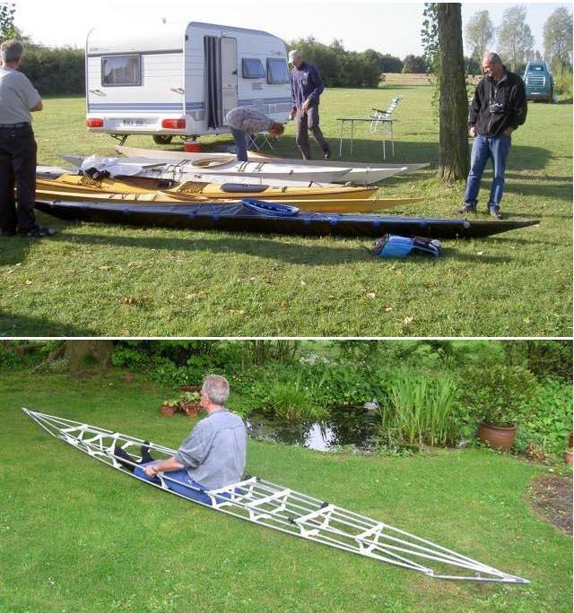

| (New) Sea Ranger by Jos Vermeiren (BE) | Menu Previous Page Next Page |
|  |
Jos Vermeiren of Belgium displays his newly completed Sea Ranger folding kayak at a Dutch qajaq event. Jos raised his gunwales a bit for greater freeboard. The aluminum / HDPE frame can be seen in the lower pic. ( 17.6ft X 19.5in / 5.36m X 49.5cm).
Jos comments on the boats performance are as follows...."Its a fine kayak, its stability is fine , first and second is great , it rolls like hell ( did allready two rolls without paddle and it worked fine) it rolls almost like a kajakpoloboat and that means its almost a rolling machine!! I did the veluwe rallye (50km) together with friends and it tracks well, its speed is fine no troubles following my friends, and there are some with fast kayaks!"
The boat building website of Erik van Woerkens (be) shows construction details. Use the {Back} key to return from the Link Above. |